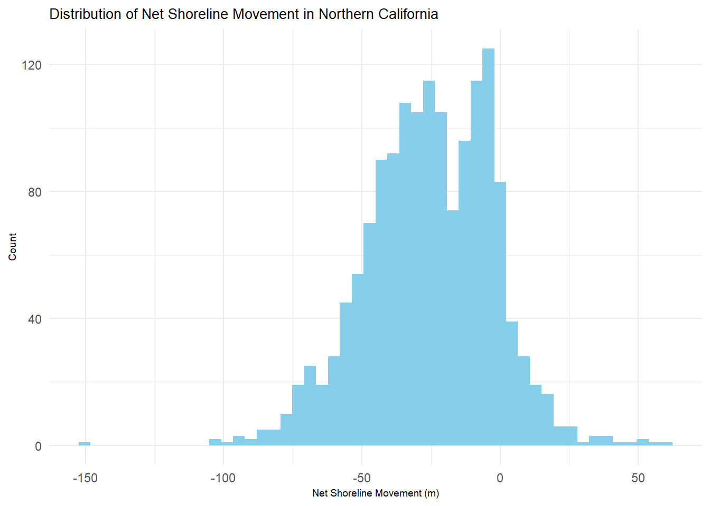
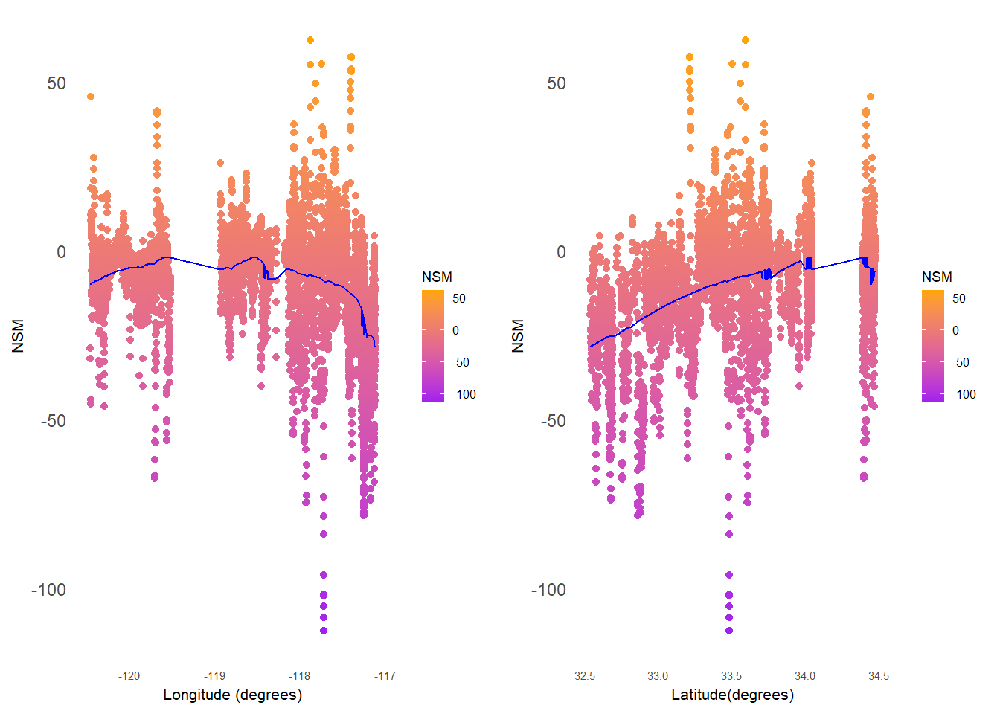

Coastal erosion is a natural process of sediment removal that occurs due to storms and waves. Climate change has caused sea levels to rise, increasing concerns for possible effects on the coastlines. While this is a natural process, some coastal communities could be facing more coastal erosion than others considering the level of development along the coast. As of 2015, approximately 68% (26.3 million people) of California residents live in a coastal area (within approximately half a mile of the mean high water line) and have likely witnessed some level of coastal erosion. California’s coastlines are also susceptible to erosion due to its tectonic activity and exposure to extreme weather events such as ENSO.
Efforts to mitigate and adapt to erosion along the coastline have been made as concerns have rised for the displacement of communities and general safety. The Department of Boating & Waterways is responsible for responding to coastal erosion in California. In areas in need of attention, such as where roads or homes collapse off of cliff tops or beach front properties being flooded, there are different levels of responses depending on the intensity of erosion. Sand replenishment and seawall or jetty installation are currently used to maintain the current infrastructure along the coastlines. This type of analysis can help in evaluating areas that need different solutions depending on the level of shoreline change.
DATA
The data used for this analysis was produced by the Coastal and Marine Hazards and Resources Program with the United States Geological Survey. This data is publicly available through the USGS ScienceBase-Catalog in a data release from the Pacific Coastal and Marine Science Center. The spatial range spans the California coast, given in degrees latitude and longitude and Universal Transverse Mercator (UTM). California is broken into three regions: Northern, Central, and Southern.
The dataset I used includes shoreline change data along the coast of California from 2015-2016. Net shoreline movement, in meters, serves as the metric of shoreline change and what I will be observing. This data was compiled to observe changes in the shoreline in response to extreme weather, as it was collected during an El Niño event (2015 marking ‘before an El Niño’ and 2016 marking ‘after an El Niño’). Net shoreline movement was ’calculated at a transect spacing of 50 meters as a proxy for sandy shoreline change throughout the El Nino winter season.
A limitation in this data is that I am using observations derived from USGS’s DSAS and Light Detection and Ranging (LiDAR) digital elevation models (DEMs), where these may have used their own assumptions that could introduce bias into this data set. Another limitation is the unequal distribution of observations per region: Southern California has many more observations than Northern or Central California, so an analysis on Southern California may be more representative of the population than the other regions studied.
To explore the data, I made histograms to understand the distribution of net shoreline movement in each region of California. The data is approximately normally distributed in all of California, with the most normal distribution in Southern California.
Show code
#read in 2015 dataCA_2015_shoreline <-st_read(file.path(rootdir,"data","CA_shoreline_changes","2015_2016_shoreline_changes","CA_2015_2016_shoreline_change.shp"))
Show code
#has only norcal observationsnorcal_NSM <- CA_2015_shoreline |>filter(Region =="n") |> dplyr::select(NSM, Lat, Long) |>na.omit()#has only cencal observationscencal_NSM <- (CA_2015_shoreline) |>filter(Region =="c") |> dplyr::select(NSM, Lat, Long) |>na.omit()#has only socal observationssocal_NSM <- (CA_2015_shoreline) |>filter(Region =="s") |> dplyr::select(NSM, Lat, Long) |>na.omit()
Show code
#Norcalnorcal_NSM_hist_n <-ggplot(norcal_NSM, aes(x = NSM)) +geom_histogram(bins =50,fill ="skyblue") +labs(x ="Net Shoreline Movement (m)",y ="Count",title ="Distribution of Net Shoreline Movement in Northern California", ) +theme_minimal() +theme(plot.title =element_text(size=10), axis.title =element_text(size =7)) norcal_NSM_hist_n

Show code
#Cencalcencal_NSM_hist <-ggplot(cencal_NSM, aes(x = NSM)) +geom_histogram(bins =50,fill ="skyblue") +labs(x ="Net Shoreline Movement (m)",y ="Count",title ="Distribution of Net Shoreline Movement in Central California") +theme_minimal() +theme(plot.title =element_text(size=10),axis.title =element_text(size =7)) cencal_NSM_hist
Show code
#Socalsocal_NSM_histsocal_NSM_hist <-ggplot(socal_NSM, aes(x = NSM)) +geom_histogram(bins =50,fill ="skyblue") +labs(x ="Net Shoreline Movement (m)",y ="Count",title ="Distribution of Net Shoreline Movement in Southern California") +theme_minimal() +theme(plot.title =element_text(size=10), axis.title =element_text(size =7)) socal_NSM_hist
ANALYSIS
To understand if there is a relationship between location along the coast and net shoreline movement, I chose to analyze net shoreline movement by the three study regions: Northern, Central, and Southern California. I will begin with hypothesis testing to determine whether the mean net shoreline movement is the same in each region. The null hypothesis is that each region has the same average net shoreline movement. The alternative hypothesis is that each region does not have the same average net shoreline movement.
I calculated the average of each region, and found that the average net shoreline movement is not the same across regions. The average net shoreline movement was least in Central California and most in Southern California. A positive value for net shoreline movement indicates an extending coastline, where a negative value indicates erosion, so Central California is estimated to be experiencing the most erosion while Southern California is estimated to be experiencing the least.
Region Mean_NSM
1 Northern CA -25.512
2 Central CA -45.702
3 Southern CA -9.743
Next, I ran a multiple linear regression of the impact of location on net shoreline movement. Using the equation:
\[NSM =\beta_{0}+\beta_{1} \cdot Longitude +\beta_{2} \cdot \text Latitude+\varepsilon_i\] I broke the data into the regions, and used this model for each region. Using RStudio, I was able to calculate the values for the coefficients, listed below.
RESULTS
Northern California
Show code
#make model mod_n <-lm(NSM ~ Long + Lat,data = norcal_NSM)summary(mod_n)#plot longitude vs NSMnorcal_mod_lon <-ggplot(data = norcal_NSM,aes(x = Long,y = NSM,color = NSM)) +geom_point() +geom_jitter() +geom_line(data =augment(mod_n), aes(y = .fitted,),color ="blue") +labs(x ="Long",y ="NSM",main ="Multiple linear regression of NSM ~ Long + Lat") +theme_minimal() +scale_color_gradient(low ="purple", high ="orange") +theme(panel.grid =element_blank(),axis.text.x=element_text(size=5.5),axis.title =element_text(size =8),legend.key.size =unit(0.4, 'cm'),legend.text =element_text(size =6),legend.title =element_text(size =7))#plot latitude vs NSM norcal_mod_lat <-ggplot(data = norcal_NSM, aes(x = Lat,y = NSM,color = NSM)) +geom_point() +geom_jitter() +geom_line(data =augment(mod_n), aes(y = .fitted,),color ="blue") +labs(x ="Lat",y ="NSM",main ="Multiple linear regression of NSM ~ Long + Lat") +theme_minimal() +scale_color_gradient(low ="purple", high ="orange") +theme(panel.grid =element_blank(),axis.text.x=element_text(size=5.5),axis.title =element_text(size =8),legend.key.size =unit(0.4, 'cm'),legend.text =element_text(size =6),legend.title =element_text(size =7))ggarrange(norcal_mod_lon, norcal_mod_lat)
Central California:
Show code
#make model for cencal mod_c <-lm(NSM ~ Long + Lat,data = cencal_NSM)summary(mod_c)#plot mod on Long vs NSMcencal_mod_lon <-ggplot(data = cencal_NSM, aes(x = Long,y = NSM,color = NSM)) +geom_point() +geom_jitter() +geom_line(data =augment(mod_c), aes(y = .fitted,),color ="blue") +labs(x ="Long",y ="NSM") +theme_minimal() +scale_color_gradient(low ="purple", high ="orange") +theme(panel.grid =element_blank(),axis.text.x=element_text(size=5.5),axis.title =element_text(size =8),legend.key.size =unit(0.4, 'cm'),legend.text =element_text(size =6),legend.title =element_text(size =7))#model on latitude vs NSMcencal_mod_lat <-ggplot(data = cencal_NSM, aes(x = Lat,y = NSM,color = NSM)) +geom_point() +geom_jitter() +geom_line(data =augment(mod_c), aes(y = .fitted,),color ="blue") +labs(x ="Lat",y ="NSM",main ="Multiple linear regression of NSM ~ Long + Lat") +theme_minimal() +scale_color_gradient(low ="purple", high ="orange") +theme(panel.grid =element_blank(),axis.text.x=element_text(size=5.5),axis.title =element_text(size =8),legend.key.size =unit(0.4, 'cm'),legend.text =element_text(size =6),legend.title =element_text(size =7))#plot side by sideggarrange(cencal_mod_lon, cencal_mod_lat)
Southern California:
Show code
#make model for southern CAmod_s <-glm(NSM ~ Long + Lat,data = socal_NSM)summary(mod_s)#plot model on longitude vs NSMsocal_mod_lon <-ggplot(data = socal_NSM, aes(x = Long,y = NSM,color = NSM)) +geom_point() +geom_jitter() +geom_line(data =augment(mod_s), aes(y = .fitted,),color ="blue") +labs(x ="Longitude (degrees)",y ="NSM") +theme_minimal() +scale_color_gradient(low ="purple", high ="orange") +theme(panel.grid =element_blank(),axis.text.x=element_text(size=5.5),axis.title =element_text(size =8),legend.key.size =unit(0.4, 'cm'),legend.text =element_text(size =6),legend.title =element_text(size =7))#model on lat vs NSMsocal_mod_lat <-ggplot(data = socal_NSM, aes(x = Lat,y = NSM,color = NSM)) +geom_point() +geom_jitter() +geom_line(data =augment(mod_s), aes(y = .fitted,),color ="blue") +labs(x ="Latitude(degrees)",y ="NSM") +theme_minimal() +scale_color_gradient(low ="purple", high ="orange") +theme(panel.grid =element_blank(),axis.text.x=element_text(size=5.5),axis.title =element_text(size =8),legend.key.size =unit(0.4, 'cm'),legend.text =element_text(size =6),legend.title =element_text(size =7)) #plot side by sideggarrange(socal_mod_lon, socal_mod_lat)

Northern California Regression Model Summary:
Show code
mod_n <-lm(NSM ~ Long + Lat,data = norcal_NSM)tab_model(mod_n)
NSM
Predictors
Estimates
CI
p
(Intercept)
-1284.29
-1838.13 – -730.45
<0.001
Long
-10.08
-15.13 – -5.03
<0.001
Lat
0.28
-1.68 – 2.23
0.782
Observations
1524
R2 / R2 adjusted
0.068 / 0.067
Central California Regression Model Summary:
Show code
mod_c <-lm(NSM ~ Long + Lat,data = cencal_NSM)tab_model(mod_c)
NSM
Predictors
Estimates
CI
p
(Intercept)
-13353.72
-16584.15 – -10123.30
<0.001
Long
-134.26
-167.45 – -101.07
<0.001
Lat
-82.71
-104.86 – -60.57
<0.001
Observations
1033
R2 / R2 adjusted
0.112 / 0.110
Southern California Regression Model Summary:
Show code
mod_s <-lm(NSM ~ Long + Lat,data = socal_NSM)tab_model(mod_s)
NSM
Predictors
Estimates
CI
p
(Intercept)
254.24
186.79 – 321.69
<0.001
Long
9.95
8.88 – 11.01
<0.001
Lat
27.11
25.16 – 29.05
<0.001
Observations
5616
R2 / R2 adjusted
0.188 / 0.188
DISCUSSION
As the results of the hypothesis test show, the average net shoreline movement in each region of California is not equal. Due to this, I reject the null hypothesis that the average net shoreline movement will be equal in across all regions in California.
These plots indicate that there is a relationship between location in California and net shoreline movement. For the most part, as longitude decreases (moving eastward), the predicted net shoreline movement decrease (coastal erosion). As latitude increases (moving northward), the predicted net shoreline movement increases (coastal extension). These models estimate that shorelines that are more southeastern are at risk for more coastal erosion.
The regression summary tables can further help in understanding the estimated relationship between location and net shoreline movement. The model predicts the following: in Northern California, about 6.8% of the variance in net shoreline movement is due to its latitude and longitude. In Central California, about 11.2% of the variance in net shoreline movement is due to its latitude and longitude. In Southern California, about 18.8% of the variance in net shoreline movement is due to its latitude and longitude. The coefficients represent the magnitude of effect of that variable on net shoreline movement. These differ greatly between each region, which could mean that each region faces different levels of environmental stressors causing differing levels of coastal erosion.
FUTURE RESEARCH
More monitoring of this coastline will be essential in forming helpful policy and adaptation strategies. With how dynamic the shoreline is in lieu of natural processes, in addition to anthropogenic influences, it is important to improve the understanding of how the coastline is changing. The effects of climate change are being understood as they happen, which is why improving monitoring is crucial in forming an analysis of coastal erosion.
Along with the data collection itself, the model used here could be improved in the future to account for discrepancies here. Another analysis that could be helpful in answering this question would be a time series decomposition analysis. This data did not have time observations, rather metrics already calculated based on the time interval provided. These models can also be applied to other areas in the United States or globally that are facing similar problems. Future analyses could also include spatial interpolation to estimate coastal erosion for all of California. This recent study inspired my suggestion for spatial interpolation as a future analysis.
REFERENCES
Barnard, P.L., Smith, S.A., and Foxgrover, A.C., 2020, California shorelines and shoreline change data, 1998-2016: U.S. Geological Survey data release, https://doi.org/10.5066/P91QSGXF
“California.” NOAA Office for Coastal Management, https://coast.noaa.gov/states/california.html.
Koppes, Steve. New High-Resolution Study on California Coastal Cliff Erosion Released, Scripps Institution of Oceanography, 4 Aug. 2022, https://scripps.ucsd.edu/news/new-high-resolution-study-california-coastal-cliff-erosion-released.
NOAA Office for Coastal Management ADS Group. “Coastal Zone Management Programs.” NOAA Office for Coastal Management | States and Territories Working on Ocean and Coastal Management, https://coast.noaa.gov/czm/mystate/#:~:text=The%20California%20coastal%20zone%20generally,line%20of%20highest%20tidal%20action.